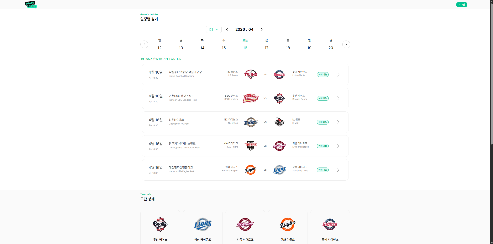
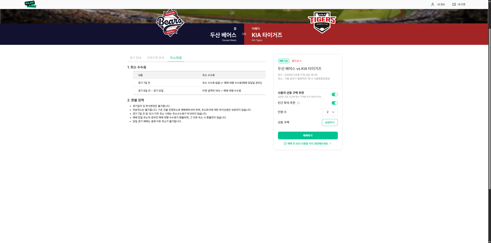
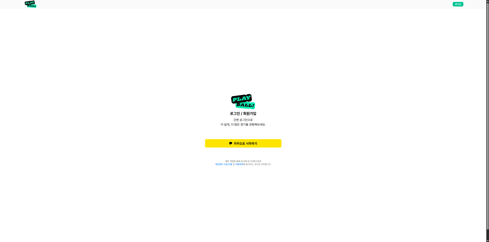

예매 대기열
Redis ZSET을 이용한 대기 순서와 상태 조회, READY 승급, 입장 토큰 흐름을 구현했습니다.
구현 과정 보기FEATURED PROJECT · BACKEND
야구 티켓팅 서비스에서
대기열과 인증 흐름을 구현하고, 실제 오류를 해결했습니다.
Redis 기반 예매 대기열, 카카오 OAuth 로그인, 계정 상태 관리, 주문 충돌 수정까지. 팀 프로젝트에서 제가 맡은 변경을 PR 기록에 연결해 정리했습니다.

MY CONTRIBUTION
구현 범위를 기능 단위로 묶었습니다. PR 개수보다 문제, 선택한 방식, 후속 수정에 초점을 맞췄습니다.
CASE STUDY / QUEUE
초기 기능 구현과 운영 흐름에서 발견한 문제를 하나의 작업 과정으로 정리했습니다.
ZSET 기반 대기열 저장, 순위 조회, 상태별 TTL, 순위에 따른 폴링 정책을 구현하기 위한 설정과 Repository를 추가했습니다.
대기열 진입·상태 조회 API, WAITING/READY 관리, 승급 스케줄러, 좌석 서비스 진입용 admission token 발급 흐름을 구현했습니다.
남아 있는 대기 상태 때문에 재진입이 실패하는 사례를 다뤘습니다. 이후 기존 상태 삭제와 재등록을 Lua 스크립트로 묶고, READY 상태와 입장 토큰의 유효 시간을 분리했습니다.

CASE STUDY / AUTH
외부 OAuth 응답을 처리하고, 기존 사용자 조회와 신규 가입, 서비스 로그인 API로 이어지게 했습니다.
토큰 발급과 사용자 정보 조회를 전담하는 클라이언트와 응답 DTO를 구성했습니다.
PR #13카카오 사용자 ID를 바탕으로 가입 여부를 확인하고, 신규 사용자 정보를 저장하는 흐름을 구현했습니다.
PR #24로그인 API를 추가하고 Refresh Token 저장 과정의 시간 타입 오류를 수정했습니다.

TROUBLESHOOTING
재주문이 500 오류로 끝나는 문제를 데이터 정리 시점에서 해결했습니다.
주문을 취소해도 order_seats 데이터가 남아 같은 좌석을 다시 주문할 때 유니크 키가 충돌했습니다.
취소 경로에서 좌석 연결을 삭제하고, 주문 생성 전에 과거 취소·환불 완료 데이터가 남아 있는지도 정리했습니다.
취소 후 동일 좌석을 다시 주문하는 경우를 확인 대상으로 삼았습니다.
ADDITIONAL WORK
중요하지만 핵심 사례와 중복되지 않는 기여를 간결하게 모았습니다.
회원 탈퇴 API와 내부 사용자 차단 API를 추가하고, 유효 티켓·환불·진행 중 거래에 따른 탈퇴 제한을 확장했습니다.
운영 환경의 상세 오류 노출을 조정하고, 오류 코드 매핑과 사용자 입력 검증 메시지를 보완했습니다.
대기열 진입 요청과 운영 환경의 로그인·일반 API 요청에 제한을 적용했습니다. 리뷰에서 제기된 식별 키 신뢰성과 Redis 연산 원자성은 후속 코드 확인이 필요합니다.
예매 옵션 저장 여부를 대기열 진입 전에 확인하고, 명백한 자동화 User-Agent를 걸러내는 기본 필터를 추가했습니다.
SOURCE & SCOPE
이 페이지는 siyeon13이 작성한 Playball 백엔드 PR을 기준으로 정리했습니다. 같은 기능의 후속 PR과 커밋이 겹칠 수 있어 PR 수를 독립적인 성과 수로 사용하지 않았습니다. 브랜치 병합 PR에는 팀원의 변경도 포함되므로 개인 구현 사례에서 제외했습니다.
NEXT PROJECT
개인 기여를 검증한 뒤 내용을 추가할 예정입니다.
프로젝트 저장소NEXT PROJECT
개인 기여를 검증한 뒤 내용을 추가할 예정입니다.
프로젝트 저장소